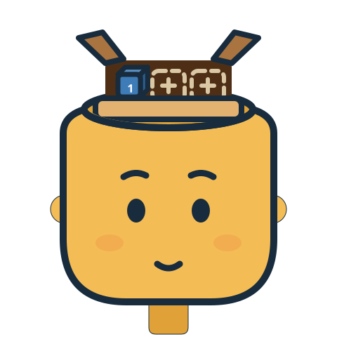

Primary
1 · Write summary
Planned start 09:00 · two 25-minute sessions
One character: a warm gold head whose open crown holds a physical kraft box. The same geometry is shared by every state, so swapping assets never shifts layout. Each state is identifiable by shape alone — closed box, open slots, released cube, half-closed lid, taped check — never by color alone.
The planning composition carries the approved zero-to-three Primary rule: occupied slots show numbered cubes (1–3, matching card order); unused slots stay visible as outlines. No fourth box is ever created.

A replica of the two prepared integration sites, using the same host classes
(task-artwork) and the documented mounting recipe: clone the inert
template, set src, intrinsic size and empty alt before
inserting, then replaceChildren(). Hosts stay aria-hidden;
images never intercept pointers; task text stays in real text nodes.
Integration site replica
Primary
Planned start 09:00 · two 25-minute sessions
Primary
Planned start 11:00 · one 40-minute session
Extra
Integration site replica
Active focus remaining
24:13
Extra task running outside the Primary boxes
The Extra/subtask badge mounts after the active task title —
it is never a fourth head box, and controls keep full pointer and keyboard access
(the artwork layer is pointer-events: none).
Flat shapes, one outline weight, no gradients and no animation: crisp at every size, safe under forced colors, and identical under reduced motion. The palette is anchored to the existing planner interface.
Deliberate differences from the reference illustration: front-facing rounded head with ears
(reads at small sizes better than a profile), the box nested inside a cut crown rim,
and no galaxy stream — the space connection is one orbit ring in FOCUS only, so decoration
never competes with tasks. Assets are generated by
assets/artwork/generate.py for provenance and consistent iteration.
Nothing here replaces the acceptance requirements in
ARTWORK-INTEGRATION.md; approval of this preview would start the recorded
asset/provenance handoff, not automatic integration.